Cafe-cafe terbaik dan
terpopuler se Malang Raya
Pilihan cafe terbaik di Malang Raya
List Cafe Populer Lainnya
Rekomendasi
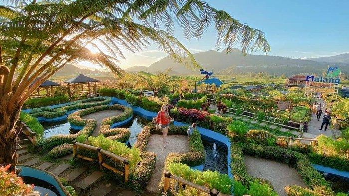
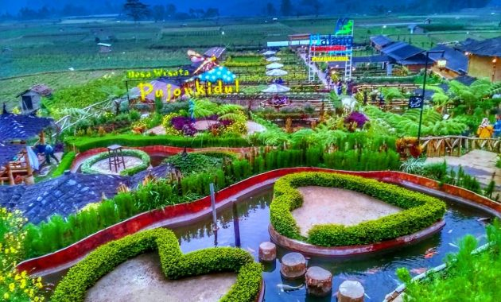
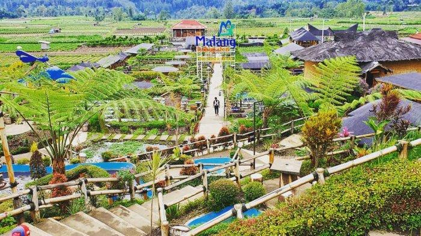
Cafe Sawah Pujon Kidul
Kab.Malang / Jawa Timur
Kafe estetik dengan konsep alami,
suasana pemandangan sawah hijau yang indah.
Rekomendasi
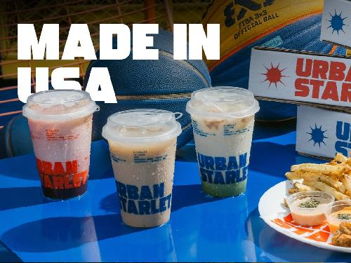
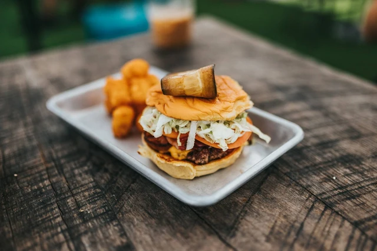
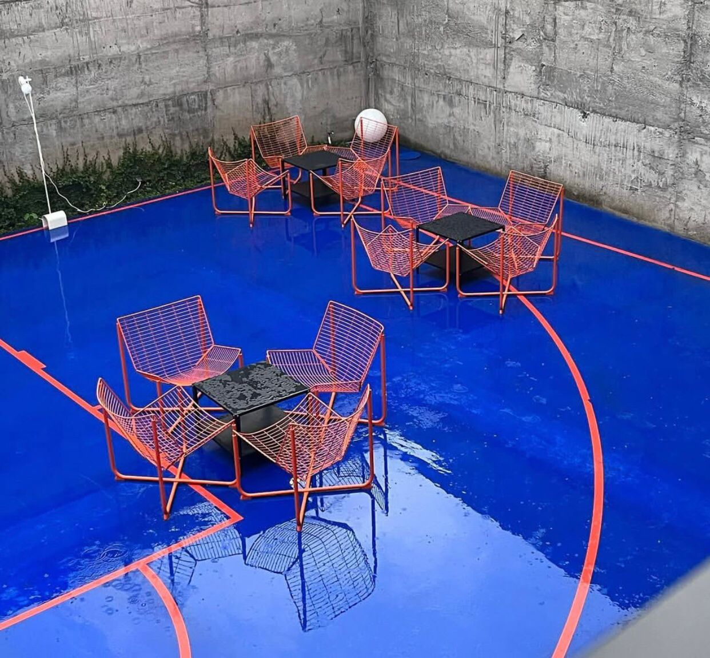
Urban Starlet
Kab. Malang / Jawa Timur
Kafe modern industrial dengan nuansa lapangan basket.
Rekomendasi
 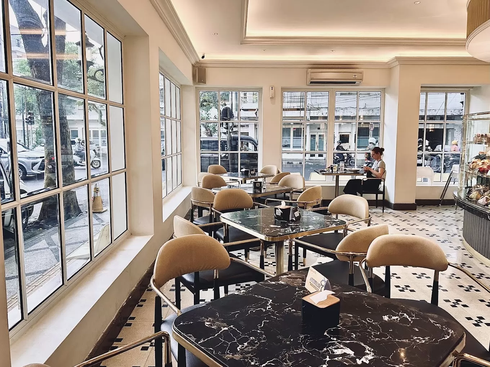
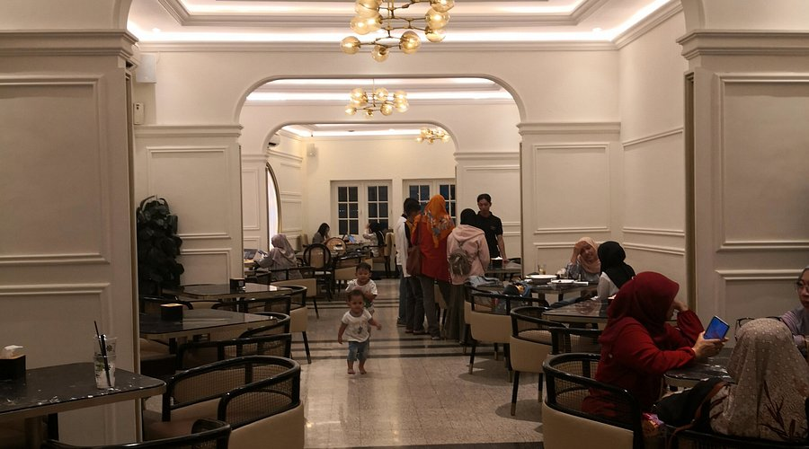
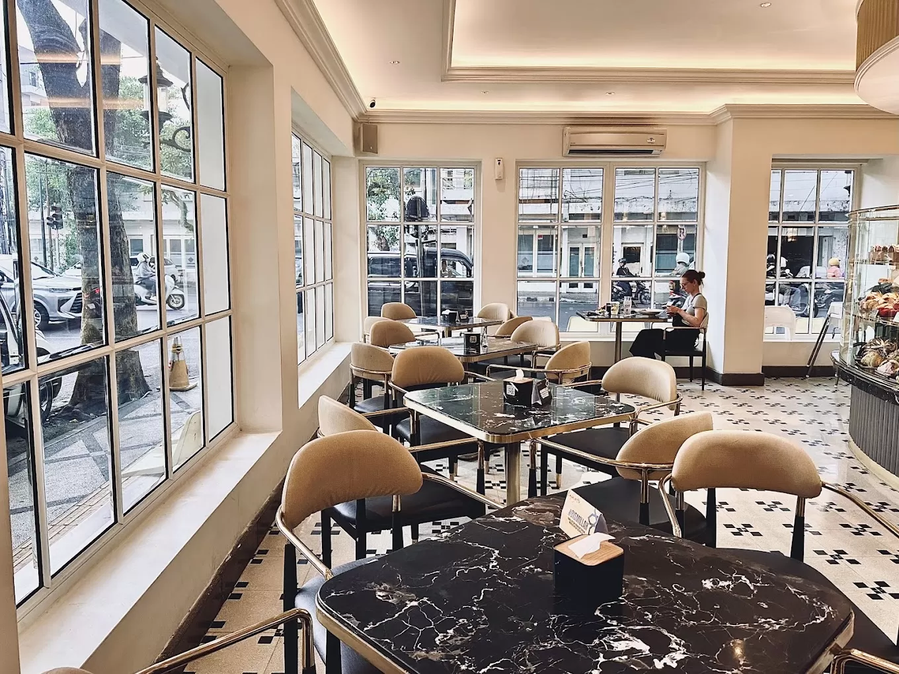
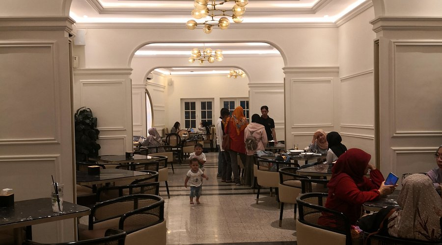
Lafayette
Kota Malang / Jawa Timur
Vibe heritage classy menyatu dengan rooftop estetik super cozy.
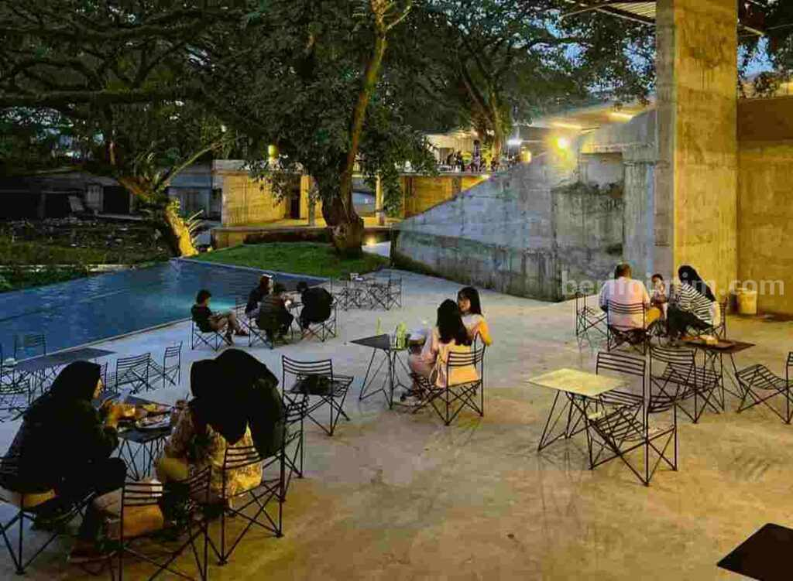
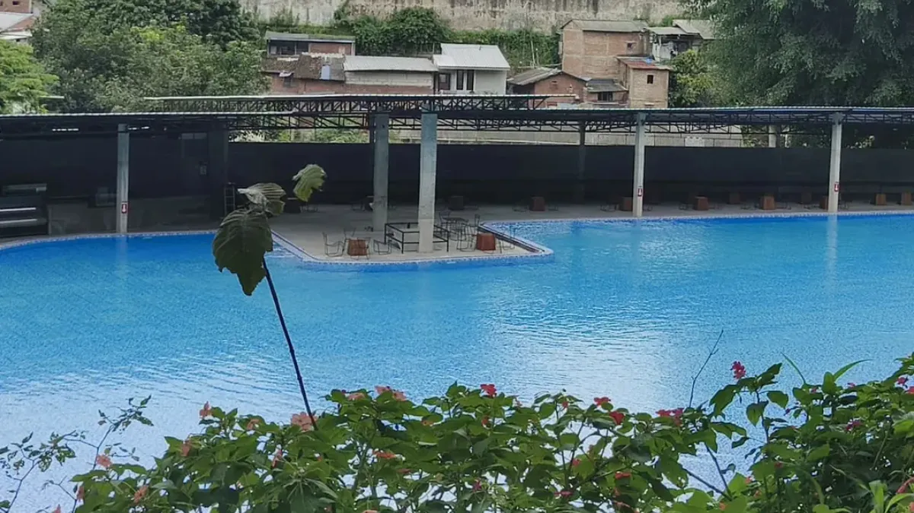
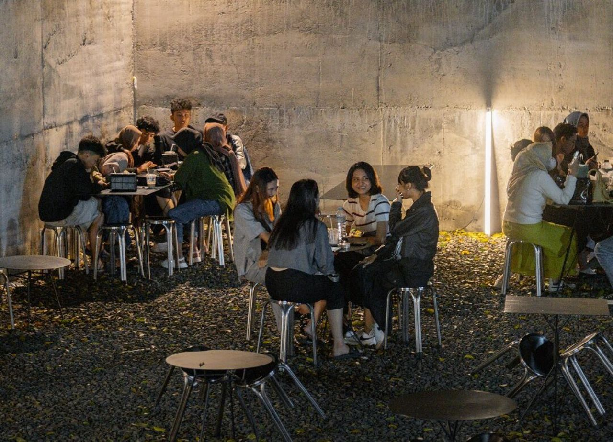
Critasena
Kota Malang / Jawa Timur
Tempat nongkrong favorit anak-anak kalcer kabupaten.
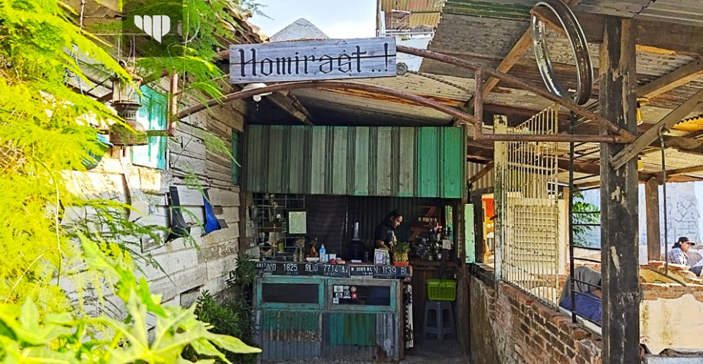
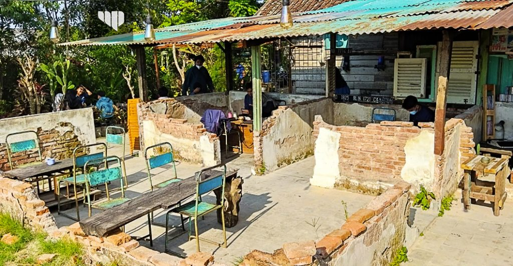
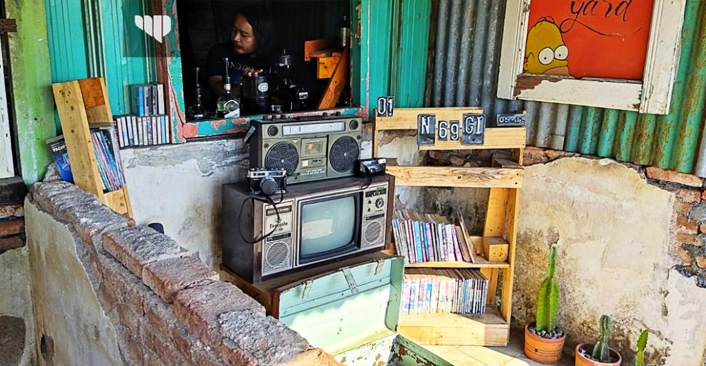
Homirast
Kota Malang / Jawa Timur
konsep bangunan tua di tengah area persawahan yang sejuk.
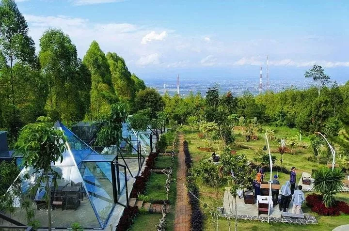
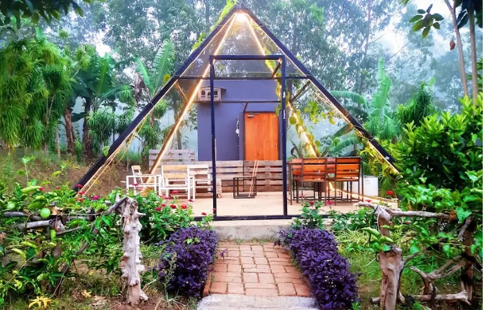
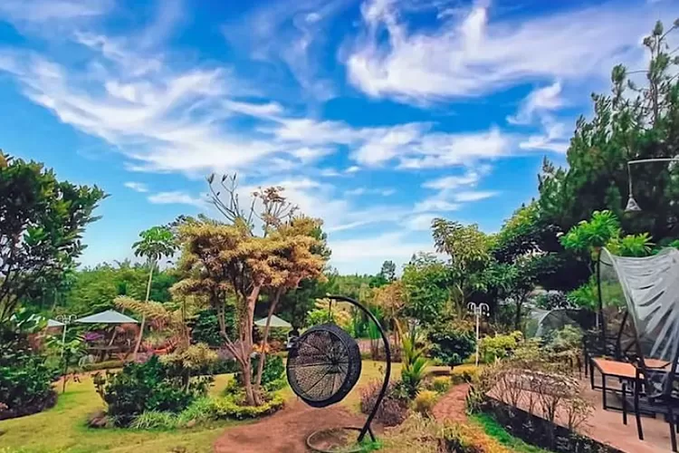
De Kleine
Kota Batu / Jawa Timur
konsep unik piramida kaca ala-ala Swiss.